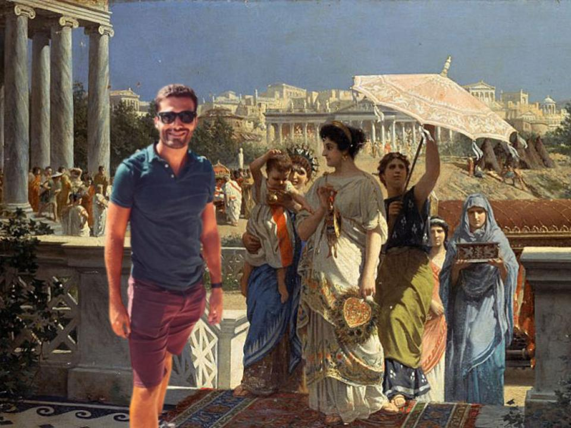
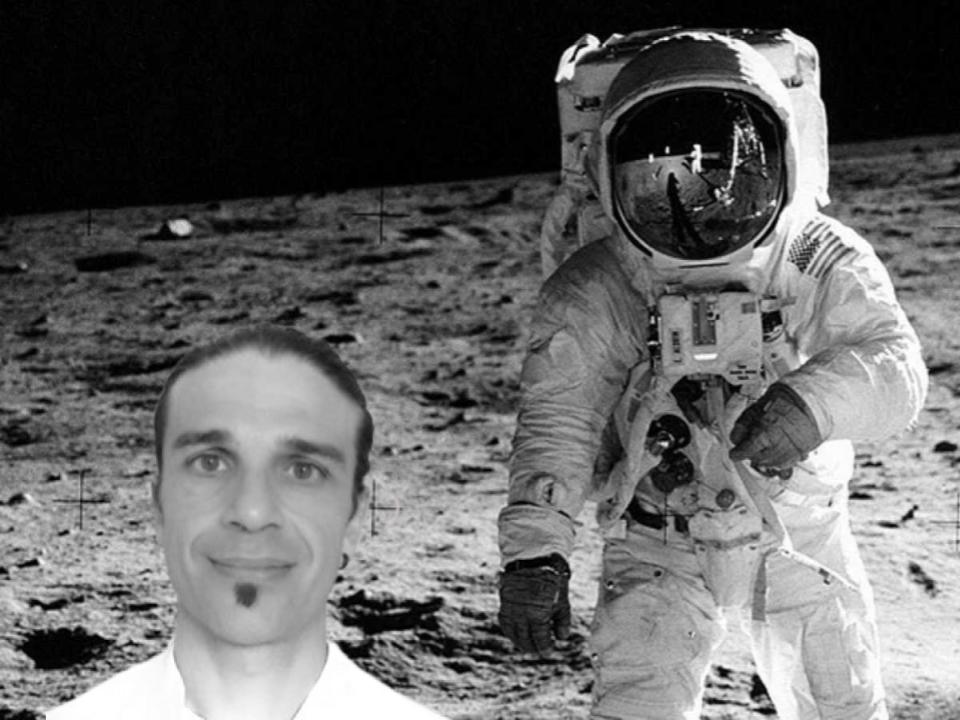
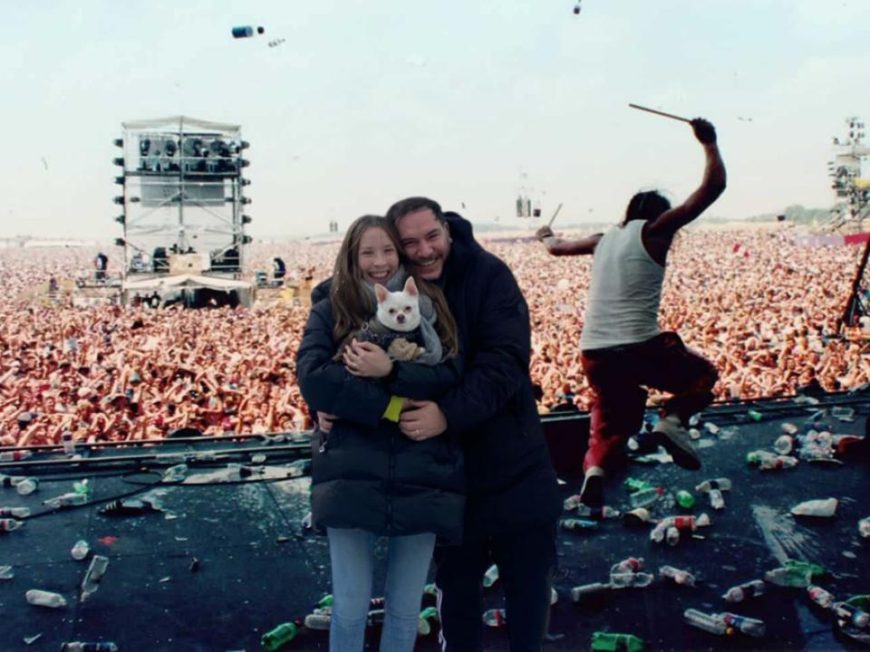

In this blog you will find the experiences of adventurous travelers who dared to live in the past. If you cannot decide which one of our packs or events to choose, or have some questions in your mind, read some stories from our previous travelers who can inspire you to take a step into the past!
Testimonials
Customers who will repeat

Federico
Traveling with Wider World was an unforgettable experience. From the first moment I contacted them I got the best recommendations and they were able to address my concerns.
My biggest fear was to travel through a portal, but the truth is that it was the most beautiful thing about this trip. We were able to share a historic moment with my friends that we will never forget.

Raúl
Together with friends, we wanted to coordinate a trip to be with Valentina Tereshkova when she launched into space for the first time.
It was a glorious moment to be a part of, 10/10 would recommend it to everyone!
It is worth mentioning the attention, patience and good predisposition with which Stephanie assisted us.
The guide of our experience was able to adapt to our group since we spoke Spanish, English and Russian; trying at all times to communicate with everyone equally. We are already making plans to watch Socrates’ Defense in the upcoming months.

Sebastián
We have finally found a travel agency that fulfills our family's dream of watching the Woodstock festival live all together.
They are exceptional professionals and they have managed to make our trip unique and unforgettable.
We are happy to have spent three days with them full of festivities. The guide who accompanied us was attentive to all our needs.
My chihuahua got hurt and with the insurance they gave us, they took care of her instantly. We were able to enjoy the rest of our time there, and we hope to do another such activity next year with Wider World.